SQL injection
To fully understand this concept we must explain:

Structured Query Language
SQL is a standardized declarative language used for managing and querying relational
databases.
In short it allows web pages to exchange data with their databases
General SQL injection definition
SQL injection is a critical vulnerability where untrusted user input is directly concatenated into a database query, allowing an attacker to manipulate the original SQL statement and execute arbitrary commands.
First order SQL injection
A first-order injection occurs when the malicious input is immediately processed and
executed within a single transaction.
Example:
Once the table with user information is found and also the columns of the table with
their relative user information is found (like usernames, encrypted passwords, user
types) the website could be exploited writing code similar to the following:
Second order SQL injection
A second-order injection involves storing the malicious payload in the database, which
is later triggered and executed during a subsequent, separate operation.
Example:
If the user inputs in the website are parameterized or sanitized, blocking eventual
first order SQL injections. Though the website's database might still be vulnerable to
second order SQL attacks. For example one could write executable SQL lines of code as
their username and if this input isn't parameterized or sanitized these lines of code
would be stored in the database. When then changing the same user's password the
username containing code in the database gets executed while changing the user's
password allowing exploits to not only be run but actually stored on the database
itself. This characteristic renders second order SQL injections much more dangerous than
the first order SQL injections.
SQL injection prevention strategies
There are 2 different possible approaches to preventing SQL injection from occurring:
Input sanitization
Input sanitization is the process of filtering or modifying input data to remove or encode potentially malicious characters. This allows the SQL program to view the input data purely as normal characters rather than special command characters. This treatment of input data makes it impossible to interpret ths user input as executable SQL commands.
Input paraterization
Input parameterization is a technique that enforces a strict separation between code and data. The SQL query structure is defined beforehand, and user inputs are treated strictly as literal values, neutralized against altering the query's logical execution.